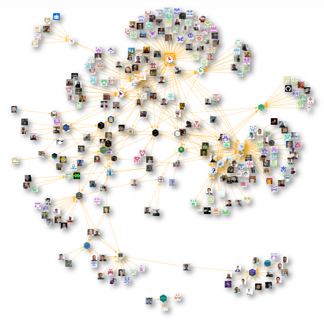

Step One: Overcoming the Fear
Who remembers their first day at school?
What about if you ever had to move to join a new school mid-year?
I had that experience as a child, and there was nothing more intimidating than stepping into a classroom of kids that had already made long-standing bonds and cliques, and here’s me joining as an outsider - the new kid! I had a crippling shyness that meant it took many years until I allowed the same level of friendships to grow as I had in my old school.
Memories like this stay with us, and they can have a habit of holding us back in later life. It never feels comfortable being the “new kid” and it takes a brave step to jump in and be open to the new connections and relationships that might come from this.
Getting involved with open source can feel similarly daunting. You’ll likely get hit with impostor syndrome making you doubt whether your code is worthy of sharing or you may fear being judged publicly by others. Even more fundamentally, you might lack certain skills or experience (such as git) which could make an initial barrier.
One of the key tenets when we started pharmaverse was for this to be driven by a passionate community of people, many of whom that actually use the packages, as who better to empathize with the challenge at hand than the users themselves? So firstly, please erase from your mind the thought that package development is only for the elite and you are “not worthy”. Nothing could be further from the truth!
To share a Coretta Scott King quote: “The greatness of a community is most accurately measured by the compassionate actions of its members”. Now, in no way do I mean here to compare our community to her amazing work for the civil rights movement, but the quote is inspiring in many contexts. We are building a pharma global community of people from all walks of life that come together to help build shared solutions to our industry clinical reporting challenges. The best way we can do this is by having compassion with one another, and you often will find exactly that when you first join a package development team - most people are willing to invest in helping you along your learning journey.
Step Two: Where to Start
Our pharmaverse website has an Individual Contributor page to help you first get started as a contributor, including many tips and some useful free online training resources for topics such as R package development, Git and GitHub.
Here are some of the recommendations:
Start small - it doesn’t even need to be a code contribution to begin with! We are equally grateful for anyone raising GitHub issues to report bugs or new feature ideas.
When it comes to you feeling ready to start to contribute code, then choose a package that covers an area of clinical reporting that you already feel confident with. Reach out to the team via our Pharmaverse Slack or on GitHub to express interest, and they may even be able to support you onboarding.
Be kind to yourself and take on one of the easier issues to build confidence - these are often labeled “good first issue” and might include activities like updating a unit test or some documentation.
Expect to have review findings for your early Pull Requests and that’s absolutely OK as the learning comes from experience. I’ve been there! I share here without shame my first ever code contribution to admiral and 4 rounds of review later we finally got it merged! Over time I’m glad to say things improved, although maybe that depends who you ask… :D
Step Three: Still Having Doubt?
I wanted to include a testimonial from another member of the community who has more recently been through all of the above steps.
Here’s Celine Piraux’s story in her own words:
Last year, I began my involvement with the xportr R package, and I’d like to share my journey towards my first pull request (PR). As a statistical programmer mainly using SAS, with some knowledge of R, I initially had no experience with R package development. Nevertheless, I was eager to contribute to an open-source R package.
The first step in getting involved with an R package is to be aware that volunteers are needed. In my case, I noticed a call for volunteers posted on Slack for the xportr package. Since this package aligns with my expertise in metadata, I eagerly jumped at the opportunity.
With no prior experience in R package development and apprehensions about potentially breaking the code, I initially adopted an observational approach. I began by installing the package, running its functions, and then exploring the code to understand their implementation. I tested the functions to evaluate if they worked as expected. If I encountered any issues, I documented them in a GitHub issue.
After creating the GitHub issues with my findings, I began to follow the implementation process by another developer to become more familiar with GitHub. This involved observing how branches are created, commits are made, and comparisons between commits and branches are performed. I also learned about the functioning of comments, pull requests, and the review process.
Once his PR was completed, it was time for the review phase, during which I ran the new code to understand the changes and experiment with it. This step also involved two technical requirements: firstly, linking my GitHub account with RStudio to access the code in the branch, and secondly, understanding how to execute code within the branch. Since installing packages using install.packages() wouldn’t function for development code, it was essential to know about the function devtools::load_all() to execute the code.
As I became familiar with both the package and GitHub, I felt more confident to start my first implementation. I read the book ‘R Packages’ to gain a better understanding of R package development. The first chapter, entitled ‘The Whole Game’, provided a good overview of R package development and introduced useful functions such as load_all(), document(), test(), and check().
With this first implementation, I dived into the development process of the package, involving tasks such as creating a new branch, committing changes, writing a descriptive commit message (still not sure of the best approach), updating and adding new tests to cover the modifications, resolving merge conflicts, updating documentation, handling failing checks in CI/CD. Having a checklist in the PR template was very helpful to keep all the necessary steps in mind.
The PR was submitted, and the reviewers provided useful feedback and valuable advice on my code. I implemented the comments, and the PR was approved and merged into the main branch.
After successfully merging my first PR, I feel more confident in contributing to open-source R packages. It’s now time to select a new issue to tackle.
Step Four: So, what are YOU waiting for…
To end, my advice to my 8 year old self from the start of this story would be “Take a risk and dive in - what have you got to lose?!” - and I only hope some part of this message resonates with others reading this blog and considering joining the open source community.
Honestly, you won’t regret it!

Last updated
2024-05-03 12:22:12.398658
Details
Reuse
Citation
BibTeX citation:
@online{farrugia2024,
author = {Farrugia, Ross},
title = {Tips for {First} {Time} {Contributors}},
date = {2024-03-11},
url = {https://pharmaverse.github.io/blog/posts/2024-03-11_tips_for__first_.../tips_for__first__time__contributors.html},
langid = {en}
}
For attribution, please cite this work as:
Farrugia, Ross. 2024. “Tips for First Time Contributors.”
March 11, 2024. https://pharmaverse.github.io/blog/posts/2024-03-11_tips_for__first_.../tips_for__first__time__contributors.html.